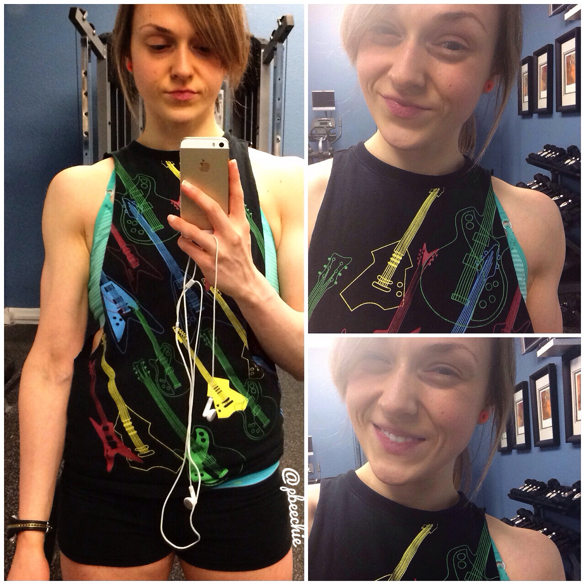
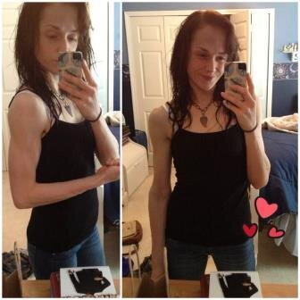

2014 Real Talk
I posted a picture on Instagram reflecting a bit on 2013, but I want to elaborate a bit... I don't open up tooooo much on my blog personally, but this means a lot to me right now.

One thing I'm bad about is that I don't take enough progress pictures. Tons of progress in 2013, but few pictures to document it. I rarely stop to just observe myself for 5 minutes. So this is me. January 1st. Unflexed. Hi. Here's to 2014. More documentation. Keeping a healthy mindset. Finding positivity every day. Exploring new methods of training. Staying hungry for success. Being aware of what I truly want. And going for it. To elaborate, more than just wanting to track my progress, I really mean that I need to maintain a healthy mindset. Physical progress means nothing if you're unhappy. If you know my history and have followed me for a while, you'll know that this time, last year, I was accidentally underweight. I began to lose too much weight after I reached my goal weight, and I was technically underweight. Picture for reference.
I was really happy and proud, but looking back, I was way too thin. My shoulders and tailbone stuck out and it hurt for me to sit or put a barbell on my shoulders. I lost my period (actually still haven't had one in 2.5 years...) and was easily injured, losing hair, always tired, hurt to walk, and I finally realized I needed to "bulk." I went from 1600-1700 calories a day to 2600 in March 2013. Around August/September I stopped counting because I was at a healthy weight, and now I just eat intuitively (approx 2200-2500 cals/day if I had to guess). I was able to put on 20-25 pounds :). I'm happy at this point, but I'm growing bored of training. I need to explore more and learn more; I've decided to change my training to implement higher intensity, full body workouts 3-4x a week as opposed to the lifting 5x a week with 10-15 mins of cardio at the end. Basically, I'm seeing how my body works with cutting. It's too easy to let the negative, past disordered thoughts creep in, so I need to work consciously to prevent that from happening.Additionally, I've been feeling lost in life in general... And I still don't know if I want to announce it but screw it. I love my job in public health research. It's exactly what I wanted when I was 16 and I'm still in awe that I got the position 3 weeks after graduation...but I'm feeling lost and uncertain of the future. I know I shouldn't stress it now since I still have at least 1.5 years at this position before I need to decide if I stay or what, but I just don't like uncertainty. I kind of get this feeling like if I want to move up at this job, I need to get a higher degree. But I know I wouldn't be happy doing that... My current degree is biochemistry. I would need a degree in chemistry or biochemistry. Probably PhD.. But I would be miserable. I could see myself getting a degree in nutritional science, but I don't see that being applicable at the CDC. At least not in the branch I currently work for. With each and every day, I think more and more about a career in food/fitness of SOME kind. Whether it's being a personal chef, blogger, food science researcher, I don't know to be honest... And that scares me. Whatever I do, I just know that being in my kitchen, playing with food, is much more of my element than being in a lab and office space. Not a lot of people know I have misophonia. It's basically an extreme aversion to sounds. And I don't mean like "ugh that lady is chewing her gum so loud how annoying." No... It affects every aspect of my life..every day... In college I had to strategically choose where I sit or else I couldn't do an exam. At movies, Jesse and I either have to strategically choose our spot away from people and hope it's okay, or just go to the drive in theater so we're concealed from sound in the car. I prefer the drive in... Little noises will set me off like mouse clicking, finger snapping, ice chewing, sighs, plate scraping, people eating/drinking, it's an embarrassingly long list and Jesse is very patient with me to make sure the apartment is silent. Anyways. The noises at work stress me out to where I can't be productive. It causes anxiety and can leave me in tears. In addition to my already existant stress about the future, it's left me pretty bummed with life... BUT. When I'm in the kitchen, in my element... it's like the rest of the world doesn't exist. Noises don't exist. It's just me and the food and the task at hand. And my moments baking/cooking are like no other. This is why food/fitness is alluring to me more and more.
These thoughts and possible career path change, amongst other things, have made me sad. If I'm being honest. Really sad. (Here's my moment of vulnerability and openness.) So I'm working really hard to, like I said on Instagram, find positivity in every day. If I'm not happy with something, I need to change it. I can change it. Just like when I was unhappy with my weight when I was overweight - I could and did change that. Nothing is permanent and everything can be controlled if you want it bad enough. In trying to find positivity every day, I have made a list of 14 things to look forward to in 2014! I saw this idea on Kath Eats Real Food blog and encourage you to do the same. It's way too easy to get lost in monotony of the week, especially if you have a 9-5 office job. The days begin to feel the same in and out. So get out and do unique things. Have things to look forward to. Here's my list, I'd love to see/hear yours! You can tag me on Instagram, email me, whatever.1. Escape The Fate/Falling in Reverse concert2. Arnold Expo 20143. Visiting my dad, grandparents, and Sarynna in Syracuse4.
Keep it in mind, don't stress, and enjoy the days as they come. Kim